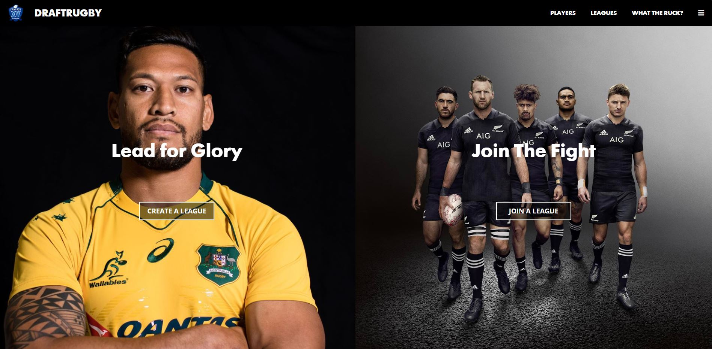
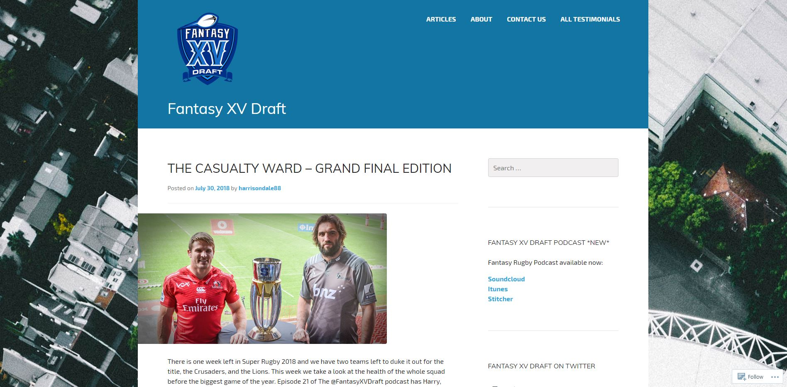

After an almost 10 year career in tetiary education administration/management, I went looking for a change and new challenge. I found what I was looking for in coding which I find both incredibly interesting and rewarding.
See for yourself|  | DraftRugby.com
Rugby is a lifelong passion of mine and in recent years I have become increasingly obsessed with fantasy rugby. The traditional fantasy rugby platforms are impersonal and not incredibly engaging, so my fellow rugby geeks and I have made our own take on fantasy rugby over the last couple of seasons using spreadsheets and videochats. Whilst alot of fun, this has been rather laborious and we've talked and talked about building our own web app as a solution. I managed to convince a couple of mates I made attending the Le Wagon coding bootcamp into helping me build a draftrugby.com. |
|  | Fantasy XV Draft
FantasyXVDraft.com is a wordpress site I have been co-managing and writing articles for over the last couple of years. In season, we release three weekly articles about the Super Rugby competition with a fantasy rugby focus. In particular, one of our articles; the Casualty Ward, has been incredibly popular as we are the one place that gathers together all team injury news into one site and are pretty meticulous in keeping it updated. This year we also started a podcast which has been alot of fun, its called Fantasy XV Draft which can be found anywhere you get your podcasts. |
| Auto Jetstar Pricebeat
The Jetstar pricebeat guarantee is a seemingly permanent promotion run by Jetstar in which they will beat any competitors fare by 10% if the flight is within 1 hour of a Jetstar flight. I honestly haven't flown domestically in Australia in the last 5+ years without taking advantage of this offer. Whilst it isn't particularly difficult to look up competitors sites and match the flight times, since I use this service fairly regularly as I imagine many others do, I'm working on automating the process. |